import pandas as pd
import numpy as np
import seaborn as sns
import matplotlib.pyplot as pltPartie 2 Analyse exploratoire des données (EDA)
1 Analyse COVID-19 globale
1.1 Chargement des données préparées
corona_dataset_aggregated = pd.read_csv("data/corona_dataset_aggregated.csv",index_col=0)
corona_dataset_aggregated.head()| Province/State | 1/22/20 | 1/23/20 | 1/24/20 | 1/25/20 | 1/26/20 | 1/27/20 | 1/28/20 | 1/29/20 | 1/30/20 | ... | 2/28/23 | 3/1/23 | 3/2/23 | 3/3/23 | 3/4/23 | 3/5/23 | 3/6/23 | 3/7/23 | 3/8/23 | 3/9/23 | |
|---|---|---|---|---|---|---|---|---|---|---|---|---|---|---|---|---|---|---|---|---|---|
| Country/Region | |||||||||||||||||||||
| Afghanistan | NaN | 0 | 0 | 0 | 0 | 0 | 0 | 0 | 0 | 0 | ... | 209322 | 209340 | 209358 | 209362 | 209369 | 209390 | 209406 | 209436 | 209451 | 209451 |
| Albania | NaN | 0 | 0 | 0 | 0 | 0 | 0 | 0 | 0 | 0 | ... | 334391 | 334408 | 334408 | 334427 | 334427 | 334427 | 334427 | 334427 | 334443 | 334457 |
| Algeria | NaN | 0 | 0 | 0 | 0 | 0 | 0 | 0 | 0 | 0 | ... | 271441 | 271448 | 271463 | 271469 | 271469 | 271477 | 271477 | 271490 | 271494 | 271496 |
| Andorra | NaN | 0 | 0 | 0 | 0 | 0 | 0 | 0 | 0 | 0 | ... | 47866 | 47875 | 47875 | 47875 | 47875 | 47875 | 47875 | 47875 | 47890 | 47890 |
| Angola | NaN | 0 | 0 | 0 | 0 | 0 | 0 | 0 | 0 | 0 | ... | 105255 | 105277 | 105277 | 105277 | 105277 | 105277 | 105277 | 105277 | 105288 | 105288 |
5 rows × 1144 columns
1.2 Extraction des données finales (total cases)
corona_dataset_aggregated["Total Cases"] = corona_dataset_aggregated.iloc[:, -1]
corona_dataset_aggregated["Total Cases"].head()Country/Region
Afghanistan 209451
Albania 334457
Algeria 271496
Andorra 47890
Angola 105288
Name: Total Cases, dtype: int64La dernière colonne du jeu de données a été utilisée pour représenter le nombre total de cas confirmés de COVID-19 pour chaque pays.
1.3 Top pays les plus touchés
top_countries = corona_dataset_aggregated["Total Cases"].sort_values(ascending=False).head(10)
top_countries Country/Region
US 103802702
India 44690738
France 39866718
Germany 38249060
Brazil 37076053
Japan 33320438
Korea, South 30615522
Italy 25603510
United Kingdom 24658705
Russia 22075858
Name: Total Cases, dtype: int641.3.1 Visualisation des 10 pays les plus touchés
top_countries.plot(kind="bar")
plt.title("Top 10 countries - COVID-19 total cases")
plt.ylabel("Cases")
plt.show()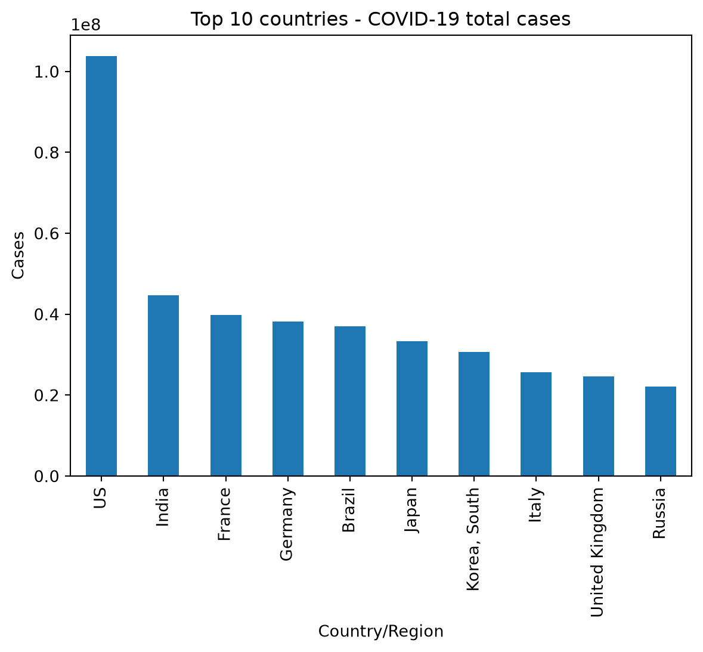
1.3.2 Visualisation des courbes d’évolution pour quelques pays
print(corona_dataset_aggregated.dtypes.head())
corona_dataset_aggregated = corona_dataset_aggregated.apply(pd.to_numeric,errors="coerce")
corona_dataset_aggregated.loc["Vietnam"].plot()
corona_dataset_aggregated.loc["France"].plot()
corona_dataset_aggregated.loc["US"].plot()
plt.legend()Province/State str
1/22/20 int64
1/23/20 int64
1/24/20 int64
1/25/20 int64
dtype: object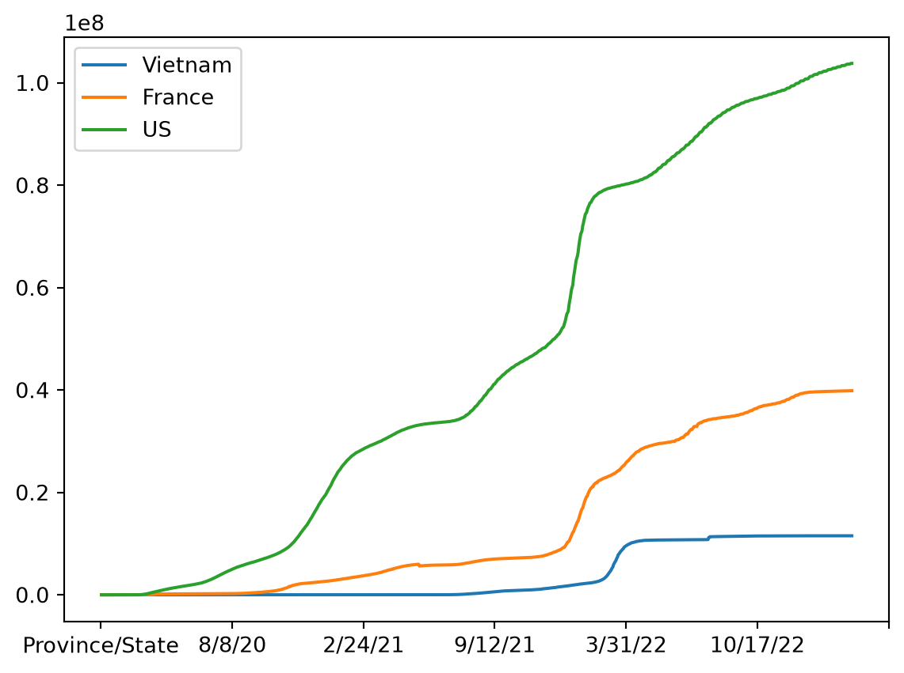
Dans cette partie, on visualise l’évolution du nombre total de cas de COVID-19 au fil du temps pour trois pays : le Vietnam, la France et les États-Unis. Les données utilisées sont cumulatives, ce qui signifie qu’elles ne peuvent qu’augmenter ou rester stables, sans jamais diminuer. Cette représentation permet de comparer la propagation de la pandémie entre les pays et d’analyser leurs dynamiques de croissance, afin de mettre en évidence les différences de niveau de contamination ainsi que la tendance globale de l’évolution des cas confirmés dans le temps.
1.3.3 Calcul du taux d’infection maximal
corona_dataset_aggregated.loc["Vietnam"].diff().plot()
corona_dataset_aggregated.loc["France"].diff().plot()
corona_dataset_aggregated.loc["US"].diff().plot()
plt.legend()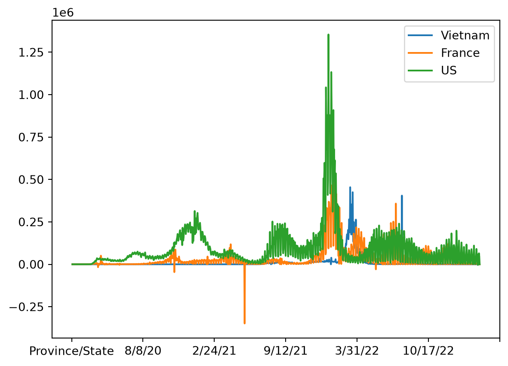
Dans cette partie, on visualise le nombre de nouveaux cas de COVID-19 par jour pour trois pays : le Vietnam, la France et les États-Unis, en appliquant la méthode de différence (diff) aux données cumulatives. Cette transformation permet de passer du nombre total de cas au nombre de cas journaliers, ce qui met en évidence les variations quotidiennes et les pics de contamination. Ce type de représentation est particulièrement utile pour analyser la dynamique réelle de propagation du virus et comparer l’intensité des vagues épidémiques entre les pays.
countries = list(corona_dataset_aggregated.index)
max_infection_rates = []
for c in countries :
max_infection_rates.append(corona_dataset_aggregated.loc[c].diff().max())
corona_dataset_aggregated["Max infection rate"] = max_infection_rates
corona_data = pd.DataFrame(corona_dataset_aggregated["Max infection rate"])
corona_data.head()| Max infection rate | |
|---|---|
| Country/Region | |
| Afghanistan | 3243.0 |
| Albania | 4789.0 |
| Algeria | 2521.0 |
| Andorra | 2313.0 |
| Angola | 5035.0 |
Dans cette partie, on calcule le taux maximal d’infection quotidienne pour chaque pays à partir des données cumulatives de COVID-19. Cette mesure correspond à la plus forte augmentation du nombre de cas confirmés observée en une seule journée, obtenue en appliquant la méthode de différence (diff) puis en sélectionnant la valeur maximale. Cet indicateur permet d’identifier les pics de contamination et de comparer l’intensité des vagues épidémiques entre les pays, indépendamment du nombre total de c
covid_ts = pd.read_csv("data/covid_timeseries.csv",index_col=0,parse_dates=True)
covid_ts.head()| Afghanistan | Albania | Algeria | Andorra | Angola | Antarctica | Antigua and Barbuda | Argentina | Armenia | Australia | ... | Uruguay | Uzbekistan | Vanuatu | Venezuela | Vietnam | West Bank and Gaza | Winter Olympics 2022 | Yemen | Zambia | Zimbabwe | |
|---|---|---|---|---|---|---|---|---|---|---|---|---|---|---|---|---|---|---|---|---|---|
| 2020-01-22 | 0 | 0 | 0 | 0 | 0 | 0 | 0 | 0 | 0 | 0 | ... | 0 | 0 | 0 | 0 | 0 | 0 | 0 | 0 | 0 | 0 |
| 2020-01-23 | 0 | 0 | 0 | 0 | 0 | 0 | 0 | 0 | 0 | 0 | ... | 0 | 0 | 0 | 0 | 2 | 0 | 0 | 0 | 0 | 0 |
| 2020-01-24 | 0 | 0 | 0 | 0 | 0 | 0 | 0 | 0 | 0 | 0 | ... | 0 | 0 | 0 | 0 | 2 | 0 | 0 | 0 | 0 | 0 |
| 2020-01-25 | 0 | 0 | 0 | 0 | 0 | 0 | 0 | 0 | 0 | 0 | ... | 0 | 0 | 0 | 0 | 2 | 0 | 0 | 0 | 0 | 0 |
| 2020-01-26 | 0 | 0 | 0 | 0 | 0 | 0 | 0 | 0 | 0 | 4 | ... | 0 | 0 | 0 | 0 | 2 | 0 | 0 | 0 | 0 | 0 |
5 rows × 201 columns
covid_ts[["France", "US", "Vietnam"]].plot()
plt.title("Évolution du nombre total de cas de COVID-19 par pays")
plt.ylabel("Nombre total de cas")
plt.xlabel("Date")
plt.legend(loc="upper left", bbox_to_anchor=(1, 1))
plt.show()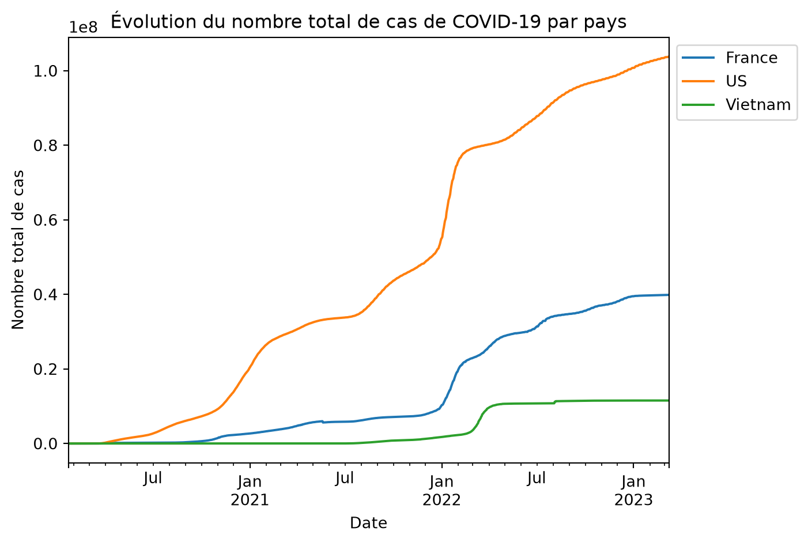
covid_ts[["France", "US", "Vietnam"]].diff().plot()
plt.title("Évolution du nombre de nouveaux cas de COVID-19 par pays")
plt.ylabel("Nombre de nouveaux cas")
plt.xlabel("Date")
plt.legend(loc="upper left", bbox_to_anchor=(1, 1))
plt.show() 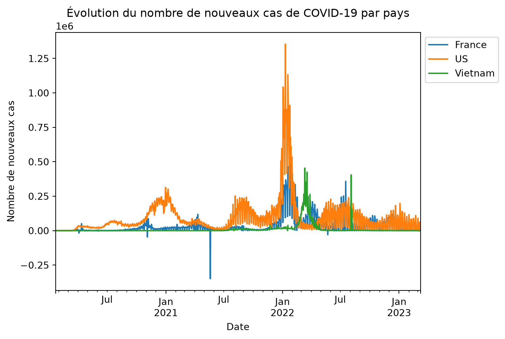
1.4 Visualisation de l’évolution globale des cas de COVID-19
global_cases = covid_ts.sum(axis=1)
global_cases.plot()
plt.title("Évolution globale des cas COVID-19")
plt.show()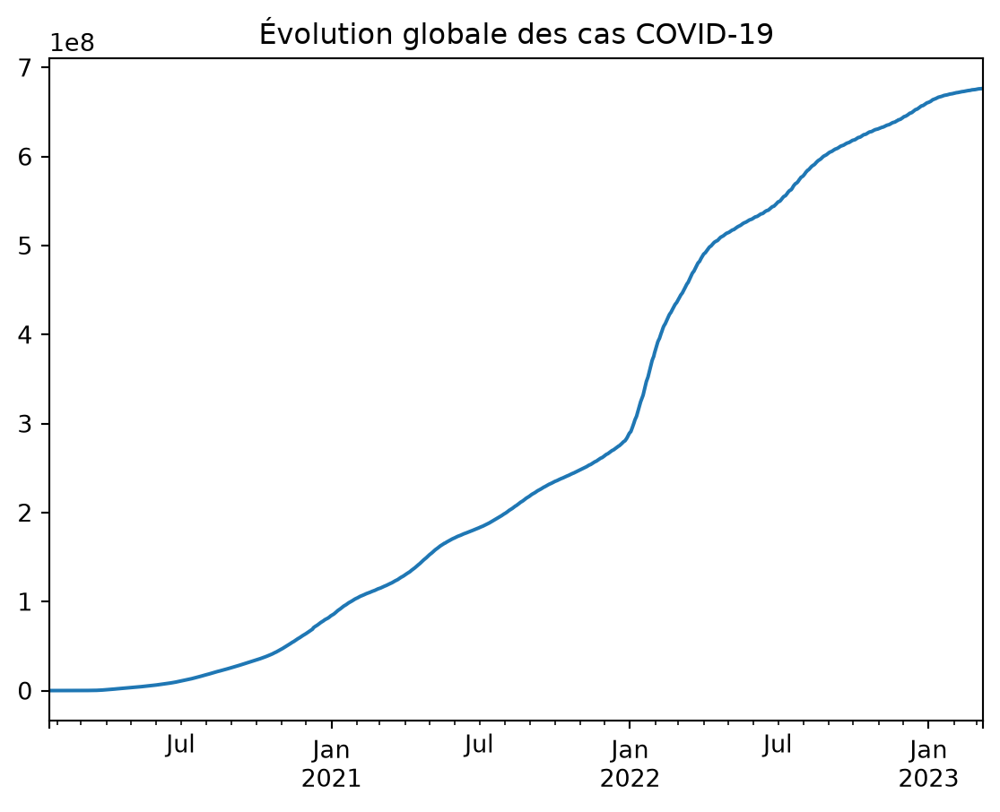
L’évolution globale des cas montre plusieurs vagues successives de contamination. On remarque une forte accélération à certaines périodes, suivie de phases de stabilisation. Cela reflète l’impact des différentes vagues pandémiques et des mesures sanitaires prises au niveau mondial.
1.5 Visualisation de l’évolution des nouveaux cas quotidiens à l’échelle mondiale
daily_cases = covid_ts.diff()
daily_cases["Global"] = daily_cases.sum(axis=1)
daily_cases["Global"].plot()
plt.title("Nouveaux cas quotidiens dans le monde")
plt.show()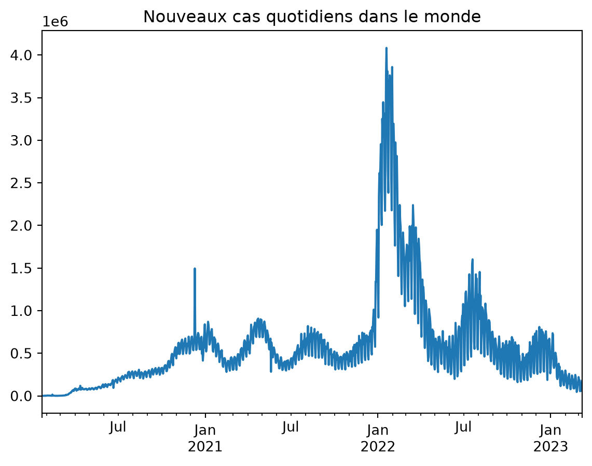
La transformation en nouveaux cas quotidiens permet de mieux visualiser les pics d’infection. On observe que les données cumulatives masquent la dynamique réelle de propagation du virus.
1.6 Visualisation de l’évolution des cas pour les 10 pays les plus touchés
top10 = covid_ts.iloc[-1].sort_values(ascending=False).head(10)
top10US 103802702
India 44690738
France 39866718
Germany 38249060
Brazil 37076053
Japan 33320438
Korea, South 30615522
Italy 25603510
United Kingdom 24658705
Russia 22075858
Name: 2023-03-09 00:00:00, dtype: int641.7 Normalize
top_countries = corona_dataset_aggregated["Total Cases"] \
.sort_values(ascending=False) \
.head(10) \
.index
normalized = covid_ts / covid_ts.max()
normalized[top_countries].plot()
plt.title("Comparaison normalisée des pays")
plt.show()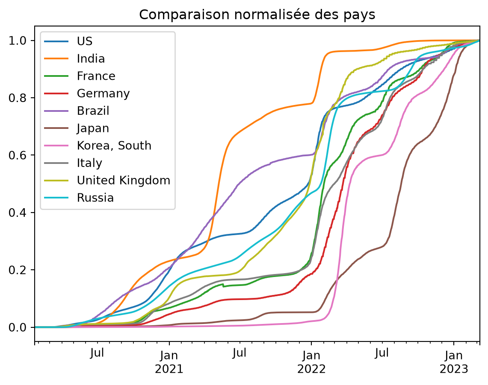
Cette étape consiste à normaliser les séries temporelles afin de faciliter la comparaison entre les pays.
Signification :
Les données de cas totaux sont divisées par la valeur maximale observée, ce qui permet de ramener toutes les séries sur une même échelle (entre 0 et 1). Ainsi, les pays ayant les plus grands nombres de cas ne dominent plus visuellement le graphique, et l’on peut comparer plus clairement les tendances relatives entre les pays sélectionnés (top 10 des pays les plus touchés).
2 Analyse du bonheur mondial
2.1 Chargement des données préparées
happiness_report_clean = pd.read_csv("data/happiness_report_clean.csv",index_col=0)
happiness_report_clean = happiness_report_clean.reset_index()
happiness_report_clean.head()| Country name | Regional indicator | Ladder score | Logged GDP per capita | Social support | Healthy life expectancy | Freedom to make life choices | Generosity | Perceptions of corruption | Ladder score in Dystopia | Explained by: Log GDP per capita | Explained by: Social support | Explained by: Healthy life expectancy | Explained by: Freedom to make life choices | Explained by: Generosity | Explained by: Perceptions of corruption | Dystopia + residual | |
|---|---|---|---|---|---|---|---|---|---|---|---|---|---|---|---|---|---|
| 0 | Finland | Western Europe | 7.842 | 10.775 | 0.954 | 72.0 | 0.949 | -0.098 | 0.186 | 2.43 | 1.446 | 1.106 | 0.741 | 0.691 | 0.124 | 0.481 | 3.253 |
| 1 | Denmark | Western Europe | 7.620 | 10.933 | 0.954 | 72.7 | 0.946 | 0.030 | 0.179 | 2.43 | 1.502 | 1.108 | 0.763 | 0.686 | 0.208 | 0.485 | 2.868 |
| 2 | Switzerland | Western Europe | 7.571 | 11.117 | 0.942 | 74.4 | 0.919 | 0.025 | 0.292 | 2.43 | 1.566 | 1.079 | 0.816 | 0.653 | 0.204 | 0.413 | 2.839 |
| 3 | Iceland | Western Europe | 7.554 | 10.878 | 0.983 | 73.0 | 0.955 | 0.160 | 0.673 | 2.43 | 1.482 | 1.172 | 0.772 | 0.698 | 0.293 | 0.170 | 2.967 |
| 4 | Netherlands | Western Europe | 7.464 | 10.932 | 0.942 | 72.4 | 0.913 | 0.175 | 0.338 | 2.43 | 1.501 | 1.079 | 0.753 | 0.647 | 0.302 | 0.384 | 2.798 |
2.2 Chargement des données préparées
happiness_data = happiness_report_clean[[
"Country name", "Logged GDP per capita",
"Social support","Healthy life expectancy",
"Freedom to make life choices", "Perceptions of corruption"]]
happiness_data.set_index("Country name", inplace=True)
happiness_data.head()| Logged GDP per capita | Social support | Healthy life expectancy | Freedom to make life choices | Perceptions of corruption | |
|---|---|---|---|---|---|
| Country name | |||||
| Finland | 10.775 | 0.954 | 72.0 | 0.949 | 0.186 |
| Denmark | 10.933 | 0.954 | 72.7 | 0.946 | 0.179 |
| Switzerland | 11.117 | 0.942 | 74.4 | 0.919 | 0.292 |
| Iceland | 10.878 | 0.983 | 73.0 | 0.955 | 0.673 |
| Netherlands | 10.932 | 0.942 | 72.4 | 0.913 | 0.338 |
2.3 Analyse du bonheur mondial
top_happy = happiness_report_clean.sort_values("Ladder score", ascending=False).head(10)
plt.figure(figsize=(10,5))
plt.bar(top_happy["Country name"], top_happy["Ladder score"])
plt.title("Top 10 countries happiest in the world")
plt.ylabel("Happiness score")
plt.xticks(rotation=45)
plt.show()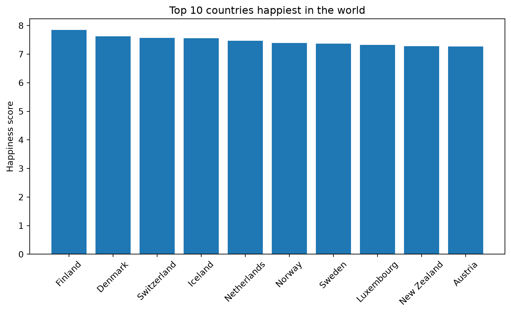
Cette visualisation montre les 10 pays les plus heureux au monde selon le score de bonheur (Ladder score). On observe que les pays nordiques dominent largement le classement. Cela suggère que des facteurs comme la stabilité sociale, le revenu élevé et la confiance institutionnelle jouent un rôle important dans le niveau de bonheur.
bottom_10 = happiness_report_clean.sort_values("Ladder score", ascending=True).head(10)
plt.bar(bottom_10["Country name"], bottom_10["Ladder score"])
plt.title("Top 10 pays les moins heureux")
plt.xticks(rotation=45)
plt.show()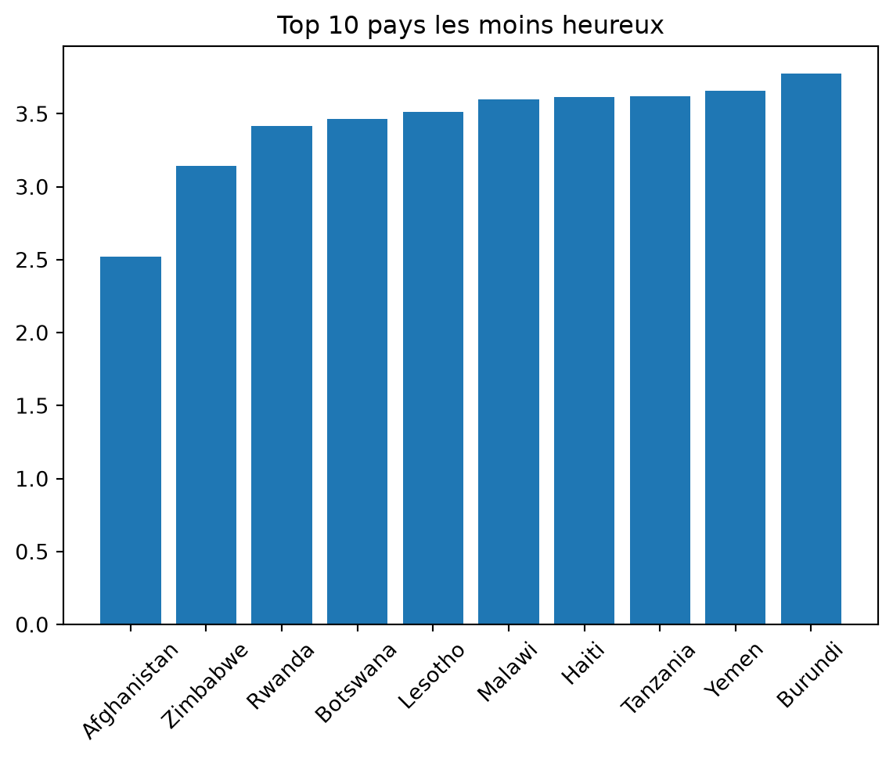
On observe que les pays les moins heureux sont souvent situés dans des régions en développement ou affectées par l’instabilité économique ou politique. Cela peut indiquer une forte dépendance entre le niveau de développement et le score de bonheur.
2.4 Distribution du bonheur mondial
sns.histplot(happiness_report_clean["Ladder score"], kde=True)
plt.title("Distribution du bonheur mondial")
plt.show()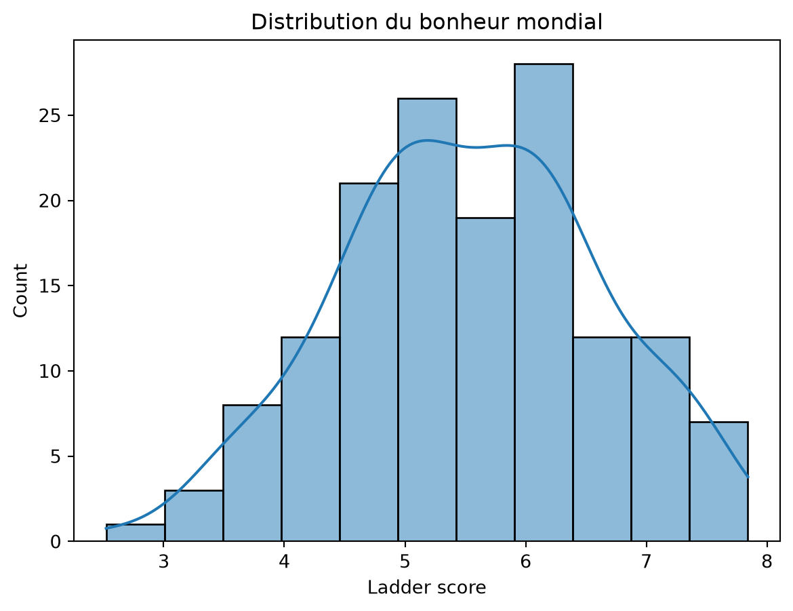
2.4.1 Bonheur moyen par région
region_happiness = happiness_report_clean.groupby("Regional indicator")["Ladder score"].mean().sort_values()
region_happiness.plot(kind="barh")
plt.title("Bonheur moyen par région")
plt.show()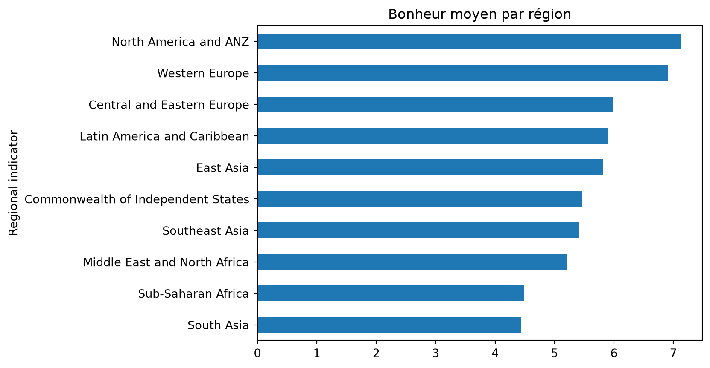
2.5 Analyse de la perception de la corruption
2.5.1 Top 10 pays les plus corrompus
most_corrupt = happiness_report_clean.sort_values(
"Perceptions of corruption",
ascending=False
).head(10)
plt.figure(figsize=(10,5))
plt.bar(most_corrupt["Country name"], most_corrupt["Perceptions of corruption"])
plt.title("Top 10 countries with highest perceived corruption")
plt.ylabel("Perceptions of corruption (high score = low corruption)")
plt.xticks(rotation=45)
plt.show()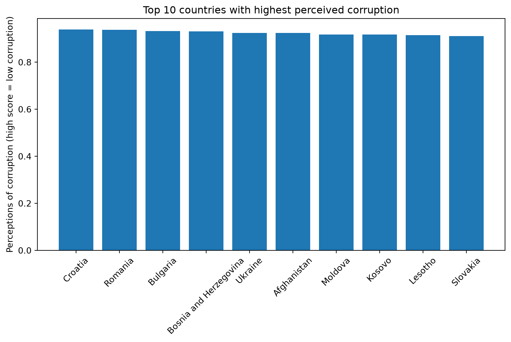
Ce graphique présente les 10 pays ayant les scores de perception de la corruption les plus élevés (proches de 1,0), ce qui indique une forte perception de la corruption au sein de la société.
Signification :
Des pays comme la Croatie, la Roumanie, la Bulgarie et l’Afghanistan affichent les niveaux de corruption perçue les plus élevés. Un manque de transparence ainsi qu’une gouvernance faible sont généralement des facteurs qui influencent négativement l’indice de bonheur global de ces nations.
2.5.2 Top 10 pays les moins corrompus
least_corrupt = happiness_report_clean.sort_values(
"Perceptions of corruption",
ascending=True
).head(10)
plt.figure(figsize=(10,5))
plt.bar(least_corrupt["Country name"], least_corrupt["Perceptions of corruption"])
plt.title("Top 10 countries with lowest perceived corruption")
plt.ylabel("Perceptions of corruption (high score = low corruption)")
plt.xticks(rotation=45)
plt.show()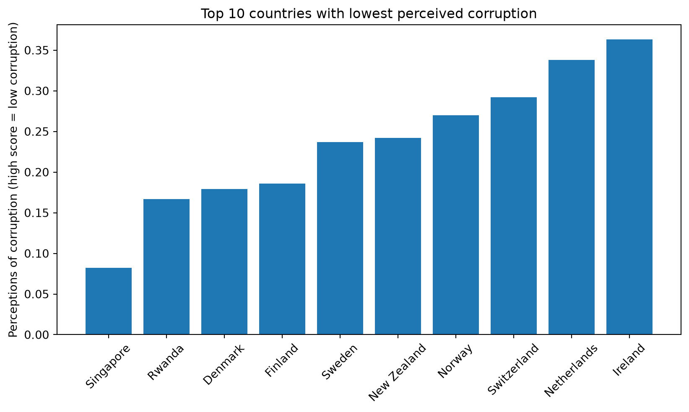
Ce diagramme en barres présente les 10 pays ayant les scores de perception de la corruption les plus faibles. Selon l’indice utilisé, un score proche de 0 indique une très faible perception de la corruption, ce qui correspond à des pays très transparents.
Signification :
Singapour, le Danemark et la Finlande figurent parmi les pays les plus transparents et les moins corrompus au monde. Ces pays se distinguent par une gouvernance efficace et des institutions solides, ce qui constitue souvent un facteur fortement associé à un niveau de bonheur élevé.
2.6 Summary statistics
happiness_report_clean.describe()| Ladder score | Logged GDP per capita | Social support | Healthy life expectancy | Freedom to make life choices | Generosity | Perceptions of corruption | Ladder score in Dystopia | Explained by: Log GDP per capita | Explained by: Social support | Explained by: Healthy life expectancy | Explained by: Freedom to make life choices | Explained by: Generosity | Explained by: Perceptions of corruption | Dystopia + residual | |
|---|---|---|---|---|---|---|---|---|---|---|---|---|---|---|---|
| count | 149.000000 | 149.000000 | 149.000000 | 149.000000 | 149.000000 | 149.000000 | 149.000000 | 149.00 | 149.000000 | 149.000000 | 149.000000 | 149.000000 | 149.000000 | 149.000000 | 149.000000 |
| mean | 5.532839 | 9.432208 | 0.814745 | 64.992799 | 0.791597 | -0.015134 | 0.727450 | 2.43 | 0.977161 | 0.793315 | 0.520161 | 0.498711 | 0.178047 | 0.135141 | 2.430329 |
| std | 1.073924 | 1.158601 | 0.114889 | 6.762043 | 0.113332 | 0.150657 | 0.179226 | 0.00 | 0.404740 | 0.258871 | 0.213019 | 0.137888 | 0.098270 | 0.114361 | 0.537645 |
| min | 2.523000 | 6.635000 | 0.463000 | 48.478000 | 0.382000 | -0.288000 | 0.082000 | 2.43 | 0.000000 | 0.000000 | 0.000000 | 0.000000 | 0.000000 | 0.000000 | 0.648000 |
| 25% | 4.852000 | 8.541000 | 0.750000 | 59.802000 | 0.718000 | -0.126000 | 0.667000 | 2.43 | 0.666000 | 0.647000 | 0.357000 | 0.409000 | 0.105000 | 0.060000 | 2.138000 |
| 50% | 5.534000 | 9.569000 | 0.832000 | 66.603000 | 0.804000 | -0.036000 | 0.781000 | 2.43 | 1.025000 | 0.832000 | 0.571000 | 0.514000 | 0.164000 | 0.101000 | 2.509000 |
| 75% | 6.255000 | 10.421000 | 0.905000 | 69.600000 | 0.877000 | 0.079000 | 0.845000 | 2.43 | 1.323000 | 0.996000 | 0.665000 | 0.603000 | 0.239000 | 0.174000 | 2.794000 |
| max | 7.842000 | 11.647000 | 0.983000 | 76.953000 | 0.970000 | 0.542000 | 0.939000 | 2.43 | 1.751000 | 1.172000 | 0.897000 | 0.716000 | 0.541000 | 0.547000 | 3.482000 |
2.7 Corrélations entre les facteurs de bonheur
sns.heatmap(happiness_data.corr(), annot=True, cmap="coolwarm")
plt.title("Corrélations entre facteurs de bonheur")
plt.show()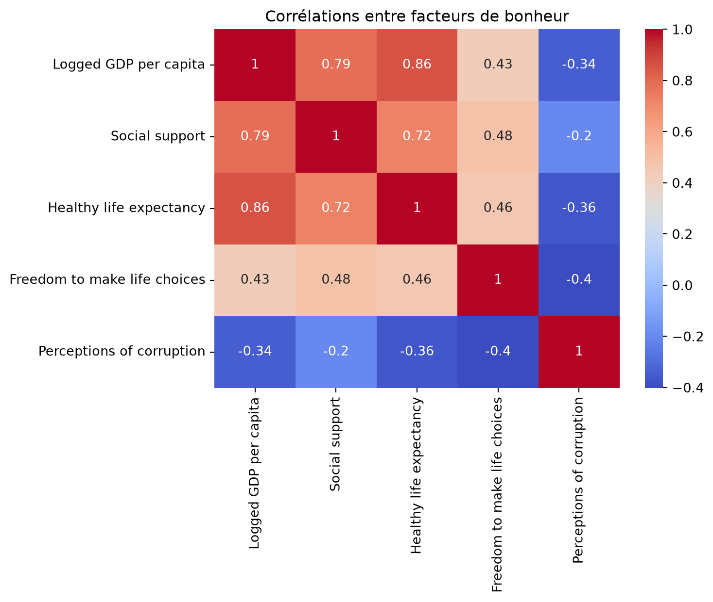
PIB par habitant (Logged GDP per capita) et Espérance de vie en bonne santé (Healthy life expectancy) : 0.86
Signification :
Il s’agit de la corrélation la plus forte du graphique. Les pays ayant un PIB par habitant élevé bénéficient généralement d’un meilleur système de santé et de meilleures conditions de vie, ce qui se traduit par une espérance de vie en bonne santé plus élevée.
PIB par habitant (Logged GDP per capita) et Soutien social (Social support) : 0.79
Signification :
Corrélation forte. Le développement économique va souvent de pair avec une meilleure protection sociale et des politiques de soutien plus efficaces pour les citoyens.
Soutien social (Social support) et Espérance de vie en bonne santé (Healthy life expectancy) : 0.72
Signification :
Corrélation forte. Lorsque les citoyens bénéficient d’un bon soutien de la communauté et de la société, leur santé physique et mentale s’améliore, ce qui contribue à prolonger leur espérance de vie en bonne santé.
Liberté de faire des choix de vie (Freedom to make life choices)
Ce facteur présente des corrélations plus modérées par rapport aux trois facteurs précédents :
- Corrélation avec le PIB : 0.43
- Corrélation avec le soutien social : 0.48
- Corrélation avec l’espérance de vie : 0.46
Signification :
La liberté de faire des choix de vie contribue au bonheur, mais elle dépend moins strictement de la richesse du pays ou de l’espérance de vie que les autres facteurs.
Les corrélations associées à la perception de la corruption sont toutes négatives, ce qui est cohérent puisque, dans ce jeu de données, un score élevé correspond à une corruption plus importante.
Liberté de faire des choix de vie : -0.40
Corrélation négative modérée : une corruption perçue plus élevée est associée à une moindre liberté de choix.Espérance de vie : -0.36 et PIB par habitant : -0.34
Corrélations négatives : les pays plus corrompus tendent à avoir un niveau de richesse et de santé plus faibles.Soutien social : -0.20
Corrélation négative plus faible, indiquant un impact plus indirect sur le sentiment de soutien social.
2.8 Relation entre le PIB et le bonheur
sns.scatterplot(
data=happiness_report_clean,
x="Logged GDP per capita",
y="Ladder score"
)
plt.title("GDP vs Happiness")
plt.show()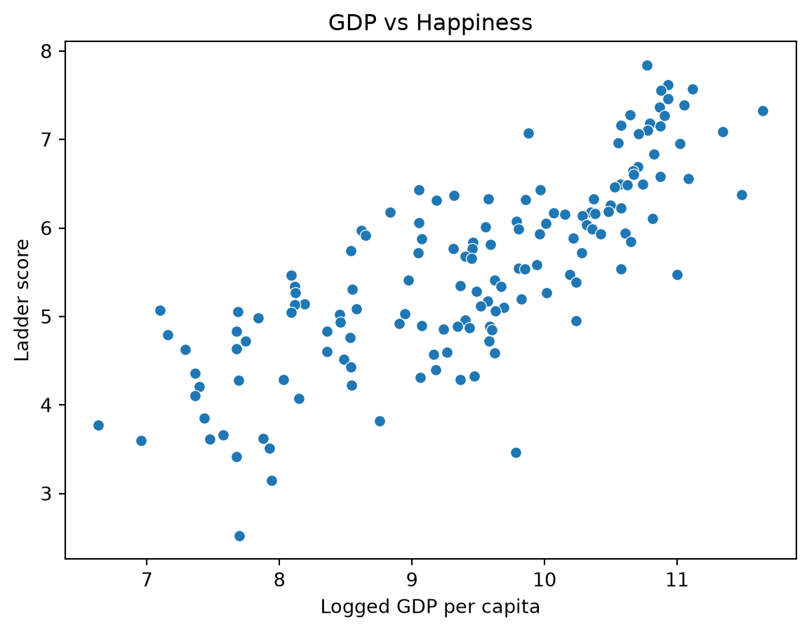
Ce nuage de points (scatter plot) montre une tendance linéaire positive claire entre le PIB par habitant (axe X) et le score de bonheur (Ladder score, axe Y).
Signification :
Plus le PIB par habitant d’un pays est élevé, plus le score de bonheur de sa population tend à être élevé. Les pays situés en haut à droite du graphique sont généralement les plus riches et les plus heureux, tandis que ceux en bas à gauche présentent à la fois un PIB faible et un faible niveau de bien-être. Cela confirme la forte corrélation positive (0.86) observée précédemment dans la matrice de corrélation.
3 Jointure des données
data_merge = corona_data.join(happiness_data, how = 'inner')
data_merge.to_csv("data/data_merge.csv", index=False)
data_merge.shape
data_merge.head()| Max infection rate | Logged GDP per capita | Social support | Healthy life expectancy | Freedom to make life choices | Perceptions of corruption | |
|---|---|---|---|---|---|---|
| Country/Region | ||||||
| Afghanistan | 3243.0 | 7.695 | 0.463 | 52.493 | 0.382 | 0.924 |
| Albania | 4789.0 | 9.520 | 0.697 | 68.999 | 0.785 | 0.901 |
| Algeria | 2521.0 | 9.342 | 0.802 | 66.005 | 0.480 | 0.752 |
| Argentina | 139853.0 | 9.962 | 0.898 | 69.000 | 0.828 | 0.834 |
| Armenia | 4388.0 | 9.487 | 0.799 | 67.055 | 0.825 | 0.629 |